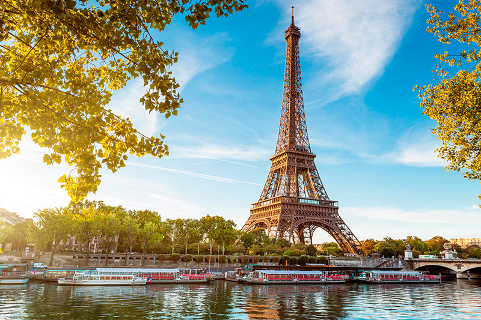

Contacta con nosotros
Hoteles
Viajes
Inicio
Contacta con nosotros
Hoteles
Viajes
Inicio
SANTORINI
Un viaje a Santorini es el sueño de todo aquel que haya visto una postalsu famosa caldera, pero la isla es mucho más que lo que cualquier foto logra
mostrar. Los días en Santorini pasan a un ritmo distinto, y las horas ahí
enriquecen con la tranquilidad de sus calles y los magníficos atardeceres.

PARÍS
No puedes quedarte sin conocer la ciudad del amor. Cada año, millones deturistas deciden visitar París atraídos por sus increíbles monumentos, sus
calles de época y sus grandes bulevares. Un ambiente lleno de romanticismo
y lujo. La Torre Eiffel, los Campos Elíseos o el Arco del Triunfo son esos
imprescindibles de París que nadie se cansa de ver, pero hay mucho más.
En definitiva, no hay quien se resista a esta ciudad.
